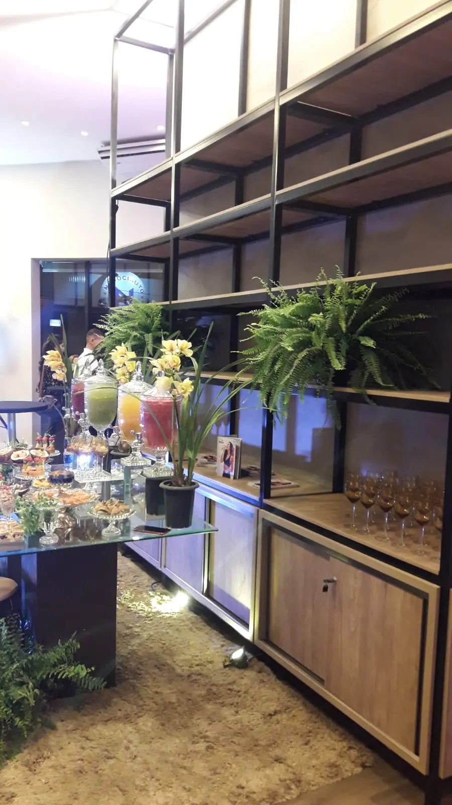

A aquisição de móveis planejados de alto padrão representa um dos investimentos mais significativos na personalização de residências e na consolidação de espaços corporativos de alta performance. Diferente de mobiliários modulares de produção em massa, a marcenaria sob medida premium é projetada para durar décadas. Contudo, para que a durabilidade física e a beleza estética se mantenham intocadas ao longo do tempo, é indispensável compreender as reações químicas, térmicas e mecânicas às quais os materiais são submetidos no cotidiano.
Neste guia definitivo, reunimos o conhecimento dos engenheiros de materiais e dos marceneiros especializados para desmistificar a higienização de painéis de MDF e MDP, a manutenção de lacas especiais e a conservação das ferragens. Ao aplicar essas instruções cirúrgicas, você protege o seu investimento e preserva a sofisticação da sua estrutura.
1. A Física dos Materiais: Como a Umidade Afeta o MDF e o MDP
O MDF (Medium Density Fiberboard) e o MDP (Medium Density Particleboard) são painéis derivados de madeira reflorestada aglutinada sob alta pressão e temperatura com resinas sintéticas. Embora ambos possuam excelente estabilidade dimensional e resistência à flexão, o principal agente de desgaste precoce é a infiltração de vapor de água e líquidos nas áreas expostas.
Diferente da madeira maciça, que é um material puramente anisotrópico e respira de acordo com a umidade relativa do ar, os painéis derivados reagem de forma destrutiva quando a umidade atinge suas fibras internas. Ocorre o fenômeno do estufamento dimensional irreversível: a água rompe as ligações das resinas e expande as partículas de madeira. Por isso, a especificação técnica correta da vedação do painel é tão importante quanto a sua higienização.
- Cola PUR (Poliuretano Reativo): Na fabricação de marcenaria de alta qualidade, a aplicação de fitas de borda com adesivo PUR blinda a chapa de madeira contra a penetração de água líquida e vapor, garantindo uma resistência muito superior à cola tradicional EVA (termoplástica).
- Foco em Zonas Críticas: Em copas de escritórios, cozinhas residenciais e banheiros, preste atenção especial nas junções dos painéis próximos a cubas, torneiras e fornos elétricos, onde o calor e a água atuam simultaneamente.
2. Guia Prático de Limpeza Química: Acabamento por Acabamento
O maior erro na conservação de armários planejados é a utilização de agentes de limpeza inadequados. Substâncias que prometem brilho instantâneo ou remoção rápida de gordura frequentemente causam danos irreversíveis nas superfícies protetoras de melamina ou pintura. Abaixo, detalhamos o protocolo adequado para cada tipo de acabamento:
A. MDF Melamínico (Amadeirados e Texturizados)
Por ser uma resina termofixa de alta resistência, a melamina aplicada nas superfícies dos painéis é altamente resistente a riscos e manchas leves. No entanto, ela é vulnerável ao acúmulo de gordura corporal e poeira suspensa.
Protocolo de Limpeza: Utilize um pano de microfibra limpo e ligeiramente umedecido em uma solução de água morna com sabão de coco neutro (proporção de 95% de água para 5% de sabão). Após a aplicação da solução, passe imediatamente outro pano de microfibra macio e seco para eliminar resíduos de umidade. Nunca utilize esponjas de aço ou a face verde de esponjas de cozinha dupla face, pois causam microfissuras que retêm sujeira e tiram o brilho natural.
B. Acabamentos em Laca (Supermate, Brilho ou Acetinada)
A laca é um acabamento de pintura automotiva aplicada sobre painéis de MDF usinados, criando uma superfície contínua e sofisticada. Por ser um revestimento mais delicado que a melamina, exige cuidados redobrados contra impactos físicos e reagentes químicos.
Protocolo de Limpeza: Para remover marcas de dedos ou poeira, use apenas pano de microfibra seco ou levemente umedecido em água pura. Para sujeiras mais difíceis, utilize detergente neutro incolor diluído em água. Evite álcool líquido, limpadores multiuso contendo amoníaco ou cloro e lustra-móveis à base de silicone. Essas substâncias reagem com os solventes da laca, resultando em manchas amareladas, perda de brilho ou descascamento.
C. Vidros, Espelhos e Perfis Metálicos (Alumínio)
Armários com portas de vidro ou perfil de alumínio anodizado estão em alta no design de interiores contemporâneo. A higienização incorreta do vidro pode escorrer líquido para dentro do perfil metálico, iniciando processos de oxidação galvânica.
Protocolo de Limpeza: Limpe o vidro com pano macio umedecido em álcool isopropílico ou limpa-vidros específico, aplicando o produto sempre no pano, e nunca borrifando diretamente na superfície para evitar o escoamento nas frestas do alumínio. Para perfis metálicos, um pano macio seco é suficiente para manter o aspecto escovado ou polido.
"A conservação preventiva da marcenaria de alto padrão requer disciplina física e química. O uso de panos macios e a ausência de excesso de umidade evitam 98% dos chamados de assistência técnica pós-venda."
3. Prevenção Ativa Contra Patologias Estruturais
Móveis sob medida são fixados diretamente nas paredes de alvenaria. Isso significa que qualquer instabilidade térmica ou hidráulica da edificação afetará diretamente a estrutura de madeira traseira do armário. Para evitar mofo, proliferação de fungos e estufamento por umidade capilar, siga as recomendações abaixo:
A. Blindagem Contra Umidade da Parede
Antes de instalar a marcenaria em paredes que fazem divisa com áreas externas ou banheiros, certifique-se de que a impermeabilização da alvenaria está íntegra. Em projetos preventivos de alto padrão, aplica-se uma barreira física na traseira dos armários (chapas de poliestireno ou espaçamento técnico de 15mm) para impedir que a umidade da parede seja transferida por capilaridade para o painel de MDF.
B. Controle do Mofo e Ventilação Interna
Ambientes fechados por muito tempo propiciam o surgimento de mofo, especialmente em closets e armários suspensos. Recomenda-se abrir as portas dos armários por pelo menos 30 minutos semanalmente para promover a circulação do ar. O uso de desumidificadores químicos ou eletrônicos em regiões muito úmidas é essencial para manter a umidade relativa interna abaixo de 60%, evitando danos às roupas e à estrutura.
C. Proteção Contra Insetos Xilófagos (Cupins)
Embora os painéis industriais recebam tratamento químico e resinas que repelem pragas durante o processo de fabricação, os cupins de madeira seca podem se instalar nas junções e fundos de armários se encontrarem caminhos livres. Realize dedetizações preventivas na edificação e evite encostar pedaços de madeira sem tratamento nas proximidades da marcenaria planejada.
4. Engenharia de Ferragens: Cuidados com a Mecânica Oculta
A sensação de luxo ao abrir uma porta de armário está diretamente ligada à performance das ferragens. Dobradiças com amortecimento (soft-close), corrediças invisíveis sincronizadas e pistões a gás são mecanismos de precisão que exigem manutenção preventiva para manter o funcionamento suave e silencioso.

- Ajuste Físico de Portas: Com o tempo e o peso das roupas ou utensílios, as portas de armários podem sofrer leves desregulagens. Não force o fechamento de portas desalinhadas, pois isso danifica os parafusos de fixação. Faça o ajuste fino dos parafusos de regulagem da dobradiça utilizando uma chave Philips adequada.
- Lubrificação Correta: Evite o uso de óleos lubrificantes minerais líquidos (como óleos multiuso comuns), pois eles acumulam poeira e resíduos, criando uma pasta abrasiva que desgasta as esferas metálicas das corrediças. Opte por silicone seco em spray ou grafite em pó para manter o deslizamento perfeito e livre de rangidos.
- Capacidade de Carga: Respeite rigidamente o limite de peso especificado pelo fabricante para cada prateleira e gaveta. Sobrecargas provocam o empenamento dos painéis horizontais e o travamento das corrediças, reduzindo a vida útil do sistema mecânico.
5. Boas Práticas de Uso no Dia a Dia
A integridade física dos móveis planejados também depende do comportamento dos usuários no cotidiano, tanto em residências quanto em instalações empresariais:
Áreas Gourmet e Cozinhas
Nunca apoie panelas quentes, assadeiras ou recipientes recém-saídos do fogo diretamente sobre tampos em MDF ou superfícies de madeira, sob risco de queimar a resina melamínica ou descolar a fita de borda. Utilize sempre apoios de mesa apropriados. Cuidado também com o calor emitido por eletrodomésticos embutidos (como fornos e micro-ondas); garanta que o projeto inclua grades de ventilação técnica adequadas.
Escritórios e Ambientes Corporativos
Evite arrastar monitores, organizadores de metal ou periféricos pesados sem proteção de feltro na base sobre tampos de mesas e recepções sob medida. A higienização de mesas corporativas deve ser feita ao final do expediente com pano de microfibra umedecido apenas em álcool 70% isopropílico para desinfecção rápida, secando em seguida.
Ao planejar seu mobiliário com a Master Ambientes Planejados, você recebe assessoria técnica completa desde o projeto em 3D até a entrega final. Nossa equipe utiliza chapas de MDF certificadas de alta densidade e ferragens importadas com tecnologia de ponta, minimizando a necessidade de reparos e estendendo a longevidade estética e estrutural dos seus móveis.
Desenvolva um ambiente sofisticado, durável e perfeitamente planejado para a sua rotina residencial ou corporativa. Agende hoje mesmo uma reunião técnica com nossos projetistas e tire suas ideias do papel com a segurança que você merece.